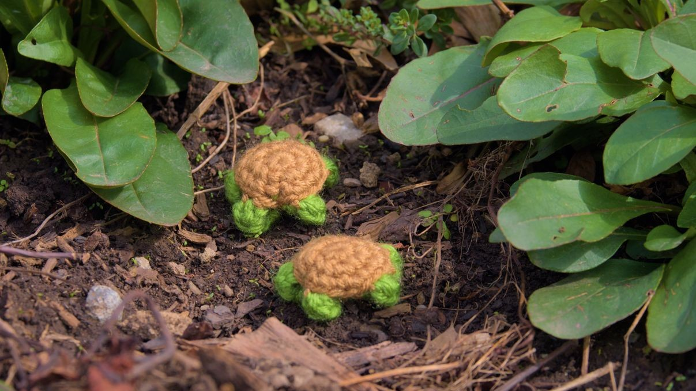
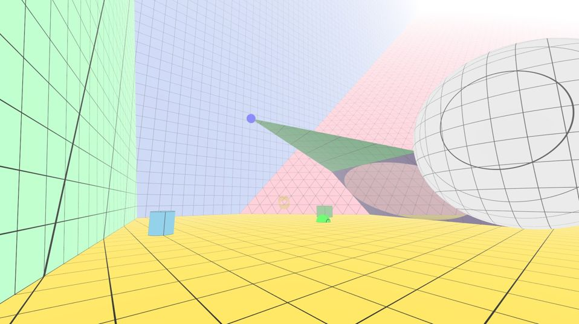

Hi! My name is Peter Schlenker, and I am a master's student at Carnegie Mellon University studying computer science. I am interested in computer graphics, writing detailed and precise code, and programming language theory. I graduated from Texas A&M University with a degree in computer science and minors in math and game design. Here are some of the projects I've worked on!
While I was at Texas A&M I was part of two clubs where we make video games! All of the games I've worked on are on itch.io, but these are three of my favorites.
I am currently taking a course on compiler design at CMU (15-611), and throughout this course we work with a partner to make compilers for subsets of C0 that output x86-64 assembly. My partner and I are writing our compiler in Rust, and apart from the starter code the course staff gave us and the parsing package LARLPOP, we've implemented everything ourselves, from creating an abstract syntax tree, to elaborating it into a simplified version, to typechecking, to generating abstract assembly, to allocating registers and writing x86-64 assembly code. Our compiler has grown more complex as the languages we need to compile become more expressive, from straight line code in the langauge L1, to loops and branches in the language L2, to function calls in the language L3. Currently we are adding support for memory access, including pointers, arrays, and structs, in the language L4.
Unfortunately, since this is a class project I cannot post our compiler publicly. Please look at the course website for more information!
During my last semester at Texas A&M I took a course on operating systems (CSCE 410). In it, we learned about what exactly an operating does and why it is needed, all the different components needed to implement an operating system, and how different operating systems are designed.
In addition to learning about operating systems, we also implement a small operating system in C. After we were given starter code, we implemented a frame manager, page tables, vitual memory management and memory allocation, kernel-level thread scheduling, a primitive disk driver, and a vanilla file system. For the most part each assignment built upon the work of the last (e.g. virtual memory needs page tables to be setup).
Since this was also a class project, I cannot share the operating system I wrote or my reports publicly. Unfortunately, there is not a publicly-accessibly course website like there is for CMU's 15-611, so the best link I can give is to A&M's undergraduate computer science course catalog.
During the summer of 2024 I learned how to use the Vulkan graphics API, and created a simple raytracer with it in C++ as a personal project. The goal of this project was to render portals on curved surfaces in realtime to see how they look. The project never got that far simply due to lack of time, but I was able to raytrace a simple scene in realtime that included several types of primitives with optional modifiers and used multi-sample antialiasing to create a clean looking image.
Here is my GitHub repository. I used Visual Studio, the Vulkan SDK, and GLFW to build and run the project on Windows.

While I was an undergraduate at Texas A&M, I worked in the Soft Interaction Lab with Dr. Jinsil Hwaryoung Seo as a Unity VR (virtual reality) developer. The two most notable projects I worked on were my engineering honors undergraduate thesis, and a VR application to help doctors diagnose sepsis.
The goal of this project was to help older adults remember their past with VR. Specfically, we took old photos they gave to us and used AI to generate 3D scenes and 360° images for them to view in a VR headset. I was the developer for this project, and the sole author for my thesis. If you'd like to read more, I've linked my thesis below.
P. Schlenker, “Using AI to Recreate Virtual Environments from Photos to Help Older Adults Remember Their Past." The OAKTrust Digital Repository at Texas A&M, 2025. https://hdl.handle.net/1969.1/1591264
The goal of this project was to help doctors practice diagnosing sepsis. We worked with a team of doctors to come up with a script and list of symptoms the patient would show.
In the simulaiton, the doctor is treating a patient in his hospital room. Participants need to first inspect his vital sign monitor and listen to his heart and his breathing, as well as observe the sploting on his skin. Then participants are required to call his healthcare provider on the phone, and then a prerecorded line will tell them what to do next. They then apply a nasal cannula, give him an IV, and collect a blood and urine sample.
In addition to computer science, I enjoy crocheting! Here is a turtle pattern I created:
Color A (brown)
Color B (green)
This next round is complicated so it is split up
Notice that the next section is different
Halfway through doing the second treble crochet stitch, insert a slip stitch into the first treble crochet stitch (forming an "H" shape instead of a "| |" shape) so that the head won't be able to be split in half
Put a decrease stich across each limb. This means that the decrease stitches for the back legs and tails will share back loops, so that there can be a decrease stitch over the tail.
Stuff the turtle before the last decrease stitch of the round
F/O and sew the hole closed